전자계산기제어산업기사 (2011-03-20 기출문제)
1과목: 전자회로
1. PN 접합 다이오드에서 정공과 전자가 서로 반대쪼긍로 흘러 나가는 것을 방해하는 것은 접합부에 무엇이 있기 때문인가?
- 페르미 준위
- 전자궤도
- 에너지 준위
- 전위장벽
(정답률: 알수없음)

2. 전력증폭기에서 전력이득이 20 이다. 이것은 약 몇 [dB] 인가?
- 10 [dB]
- 13 [dB]
- 26 [dB]
- 33 [dB]
(정답률: 알수없음)
3. 다음 연산증폭기 회로에서 R1 = 3[kΩ], R2 = 6[kΩ] 일 경우 전압이득 Av는 얼마인가?
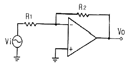
- -2
- 2
- -3
- 3
(정답률: 알수없음)
4. 수정 발진기는 수정 진동자의 리액턴스 주파수 특성이 어떻게 될 때 안정한 발진을 지속하는가?
- 용량성
- 유도성
- 저항성
- 임피던스성
(정답률: 알수없음)
5. 다음 π형 평활회로에 대한 설명으로 옳은 것은?
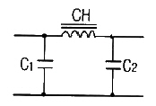
- C1, C2의 용량이 증가하면 차단주파수가 높아진다.
- CH의 인덕턴스가 증가하면 차단주파수가 높아진다.
- 일반적으로 초크 입력형 보다 전압변동률이 크다.
- C1, C2의 용량이 증가하면 리플 함유율이 커진다.
(정답률: 알수없음)
6. 푸시풀(push-pull) 전력 증폭기에서 출력 파형의 찌그러짐이 작아지는 주요 이유는?
- 홀수열 고조파가 상쇄되기 때문
- 짝수열 고조파가 상쇄되기 때문
- 홀수열 및 짝수열 고조파가 상쇄되기 때문
- 직류 성분이 없어지기 때문
(정답률: 알수없음)
7. 다음 중 포스터-실리 검파기와 비 검파기의 특징에 대한 설명으로 옳지 않은 것은?
- 비 검파기는 진폭 제한 작용도 한다.
- 포스터-실리 검파기와 비 검파기는 회로 구성에서 다이오드의 접속 방향이 서로 다르다.
- 비 검파기는 부하 저항의 중간점이 접지되어 있다.
- 포스터-실리 검파기의 감도가 더 둔하다.
(정답률: 알수없음)
8. 효율은 좋으나 출력파형이 심하게 일그러지므로 고주파 동조 증폭기에 한정적으로 응용되는 전력 증폭기는?
- A급 전력증폭기
- B급 전력증폭기
- C급 전력증폭기
- AB급 전력증폭기
(정답률: 알수없음)
9. 차동 증폭기에서 동상신호제거비(CMRR)에 대한 설명으로 옳은 것은?
- 이 값이 클수록 우수한 증폭기가 된다.
- 차동 이득은 작을수록 우수한 증폭기가 된다.
- 동상 이득은 클수록 우수한 증폭기가 된다.
- 이 값이 크면 증폭기의 잡음출력이 크다.
(정답률: 알수없음)
10. RC 결합 증폭회로에서 증폭 대역폭을 2배로 하려면 증폭 이득을 약 몇 [dB] 감소시켜야 하는가?
- 2 [dB]
- 4 [dB]
- 6 [dB]
- 12 [dB]
(정답률: 알수없음)
11. 다음과 같은 회로에서 출력 전압 Vo는?
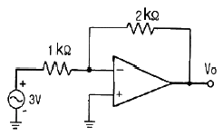
- -3[V]
- -4[V]
- -5[V]
- -6[V]
(정답률: 90%)
12. 궤환 회로가 발진을 하기 위해서는 Barkhausen 발진 조건을 만족해야 한다. A가 발진기의 증폭도, β가 궤환량을 나타낼 때 이 조건을 바르게 나타낸 것은?
- βA = 0
- βA ＞ 0
- βA = 1
- βA ＜ ∞
(정답률: 80%)
13. 다음 원소 중 도너로 사용되지 않는 것은?
- In(인듐)
- P(인)
- As(비소)
- Sb(안티몬)
(정답률: 알수없음)
14. 다음 변조 방식 중 불연속 변조 방식은?
- PCM
- AM
- FM
- PM
(정답률: 알수없음)
15. FET 핀치-오프(pinch-off) 전압에 대한 설명으로 가장 적합한 것은?
- 최대전류가 흐를 수 있는 드레인과 소스 사이에 최대 전압
- FET 애벌런치(Avalanche) 전압
- 채널 폭이 막힌 때의 게이트 역방향 전압
- 채널 폭이 최대로 되는 게이트(Gate)의 역방향 전압
(정답률: 60%)
16. 다음 중 연산증폭기의 응용 예로 적합하지 않은 것은?
- 능동여파기
- RC 발진기
- 디지털계산기
- A/D변환기
(정답률: 알수없음)
17. 연산증폭기의 입력단은 주로 무슨 회로로 구성되는가?
- 공통 이미터 증폭기
- 차동 증폭기
- 이미터 플로어
- 공통 드레인 증폭기
(정답률: 알수없음)
18. 변압기를 사용하지 않는 전력 증폭회로에서 push-pull 회로의 조건으로 거리가 먼 것은?
- 두 입력의 크기는 같을 것
- 위상차는 180° 일 것
- B급에서 동작할 것
- 전원 효율이 50% 이하일 것
(정답률: 알수없음)
19. 이상적인 연산 증폭기의 조건이 옳지 않은 것은?
- 전압이득이 무한대이다.
- 입력 임피던스가 무한대이다.
- 출력 임피던스가 무한대이다.
- 대역폭이 무한대이다.
(정답률: 알수없음)
20. 다음 중 부궤환 증폭기의 특징에 대한 설명으로 적합하지 않은 것은?
- 이득이 감소한다.
- 잡음이 감소한다.
- 주파수 대역폭이 증가한다.
- 입·출력 임피던스 값의 변화가 없다.
(정답률: 알수없음)
2과목: 디지털공학
21. 함수 F(x, y , z) = ∑(1, 2, 3, 4)를 최대항의 곱으로 표시하면?
- F(x, y , z) = π(1, 3, 6, 7)
- F(x, y , z) = π(0, 5, 6, 7)
- F(x, y , z) = π(0, 2, 5, 6)
- F(x, y , z) = π(1, 3, 5, 7)
(정답률: 알수없음)
22. 다음 비교회로에서 Y의 기능은?
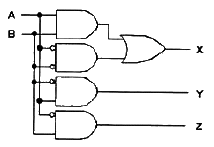
- A = B
- A ＞ B
- A ＜ B
- A ≠ B
(정답률: 알수없음)
23. 7bit 코드로 정보 전송 시에 발생하는 오류의 검색이 용이 하도록 한 코드 방식은?
- 8421 코드
- Excess-3 코드
- BCD 코드
- Biquinary 코드
(정답률: 알수없음)
24. 입력변수 A와 B가 있을 때 half adder 가 할 수 있는 기능은?
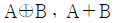
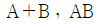
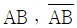
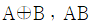
(정답률: 알수없음)
25. 다음 진리표는 어떤 회로를 나타낸 것인가?
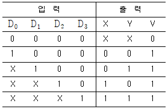
- 금지 회로
- 비교 회로
- 다수결 회로
- 우선순위 인코더
(정답률: 67%)
26. 입출력장치 또는 A/D 변환 등에 주로 사용되는 코드는?
- 5421 코드
- BCD 코드
- 3-초과 코드
- 그레이 코드
(정답률: 알수없음)
27. JK 마스터/슬레이브 플립플롭에 대한 설명 중 맞는 것은?
- 홀드시간이 요구된다.
- 경주 문제를 해결할 수 있다.
- J, K 입력 잡음에 별로 민감하지 않다.
- J, K 입력에 대한 출력 응답은 2 클록펄스가 요구된다.
(정답률: 알수없음)
28. 10진수 45를 16진수로 변환한 것은?
- 2A
- 2B
- 2C
- 2D
(정답률: 알수없음)
29. 5개의 플립플롭으로 구성된 상향 계수기의 모듈러스(modulus)와 이 계수기로 계수 할 수 있는 최대값은?
- modulus : 5, 최대값 : 32
- modulus : 6, 최대값 : 32
- modulus : 31, 최대값 : 32
- modulus : 32, 최대값 : 31
(정답률: 알수없음)
30. 어떤 플립플롭에서 CP(clock pulse)가 1에서 0으로 변하는 시간괴 출력이 보수화 되는 시간 사이에 20ns의 지연이 생긴다면 10bits의 리플카운터는 얼마의 지연 시간이 발생되는가?
- 2[ns]
- 20[ns]
- 20[ns]
- 400[ns]
(정답률: 알수없음)
31. 다음 비안정 멀티바이브레이터 회로에서 R1 = R2 = 10[kΩ], C1 = C2 = 120[pF]를 가지면 클록의 발진주파수는 약 몇 [kHz] 인가?
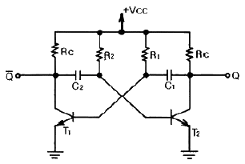
- 604
- 584
- 546
- 484
(정답률: 90%)
32. 다음 표는 D 플립플롭의 진리표이다. Qn+1의 상태는?
- a : 0, b : 0, c : 0, d : 0
- a : 0, b : 0, c : 0, d : 1
- a : 0, b : 1, c : 0, d : 1
- a : 0, b : 0, c : 1, d : 1
(정답률: 알수없음)
33. 그림을 1bit 2진 비교기로 사용하고자 한다. 출력 f는 다음 중 어느 경우를 나타내는가?
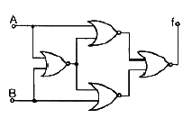
- 사용할 수 없다.
- A ＞ B
- A ＜ B
- A = B
(정답률: 알수없음)
34. 2개의 입력 단에 동시에 1을 가했을 때의 출력이 이전출력의 보수로 나타나는 플립플롭은?
- RS
- JK
- D
- T
(정답률: 알수없음)
35. D 플립플롭은 클록 펄스를 “0”에서 “1”로 가하기 전에 D 입력에 새로운 입력값을 일정 시간 동안 유지하여 주어야 한다. 이 시간을 무엇이라고 하는가?
- setup 시간
- hold 시간
- idle 시간
- 실행 시간
(정답률: 알수없음)
36. 다음 회로에서 Q가 0일 때, A와 B가 아래와 같이 변하면 Q의 값의 변화는?
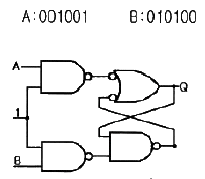
- 001101
- 001001
- 010011
- 001011
(정답률: 알수없음)
37. 그림과 같은 카르노맵의 가장 간단한 논리식은?
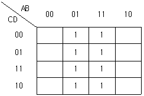
- A
- B
- C
- D
(정답률: 알수없음)
38. 디멀티플렉서(demultiplexer)특성을 나타내는 것은?
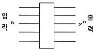
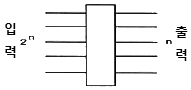
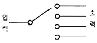
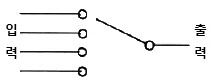
(정답률: 82%)
39. 순서 회로의 설명 중 옳지 않은 것은?
- 조합회로가 포함된다.
- 기억소자가 필요하다.
- 카운터는 전형적인 순서회로이다.
- 입력 값의 순서에는 영향을 받지 않는다.
(정답률: 알수없음)
40. 링 카운터의 존슨 카운터에 대한 설명으로 틀린 것은?
- 두 카운터 모두 비동기식이다.
- N진 존슨 카운터를 설계하기 위해서는 N/2 개의 플립플롭이 필요하다. (단, N은 짝수)
- N진 링 카운터를 설계하기 위해서는 N개의 플립플롭이 필요하다.
- 플립플롭의 출력이 다른 플립플롭 입력의 일부로 연결되는 궤환(feedback)구조를 가지고 있다.
(정답률: 알수없음)
3과목: 마이크로프로세서
41. CPU가 인스트럭션을 수행하는 순서를 옳게 나열한 것은?
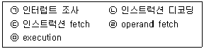
- ㉢ - ㉠ - ㉡ - ㉣ - ㉤
- ㉢ - ㉡ - ㉣ - ㉤ - ㉠
- ㉡ - ㉢ - ㉣ - ㉤ - ㉠
- ㉣ - ㉡ - ㉢ - ㉤ - ㉠
(정답률: 알수없음)
42. 마이크로프로세서의 디스플레이 장치로 사용할 수 없는 것은?
- LCD
- 7-segment
- LED
- Photo-diode
(정답률: 알수없음)
43. 마이크로프로세서의 직렬 입출력과 관계없는 것은?
- SIO
- USART
- RS-232C
- PPI
(정답률: 알수없음)
44. D/A 변환기의 구성 요소가 아닌 것은?
- 가산증폭기
- 레벨증폭기
- 비교기
- R-2R 리더기
(정답률: 알수없음)
45. 마이크로컴퓨터에서 부호(양수, 음수)의 표현으로 틀린 것은?
- 최상위 비트가 0 이면 양수(+)의 부호가 된다.
- 8비트인 경우 2진수의 값 0000 0011은 십진수 +3 이다.
- 4비트인 경우 (1101)2의 2의 보수의 값은 (0010)2 이다.
- 16비트, 32비트인 경우 최상위 비트가 1 이면 음수(-)의 부호가 된다.
(정답률: 알수없음)
46. CPU가 프로그램을 수행하다 기존의 PC(program counter) 값을 임시 보관해야 할 경우가 생긴다. 이런 경우에 사용되는 임시 저장 공간은?
- 버스(bus)
- 큐(queue)
- 스택(stack)
- 클록 (clock)
(정답률: 92%)
47. 다음 중 컴퓨터의 기본 명령 형식이 아닌 것은?
- 메모리 참조 명령
- 레지스터 참조 명령
- 입출력 명령
- 인덱스 참조 명령
(정답률: 알수없음)
48. 중앙처리장치(CPU)의 하드웨어적인 요소가 아닌 것은?
- PC(Program Counter)
- IR(Onstruction Register)
- MODEM
- MAR(Memory Address Register)
(정답률: 알수없음)
49. stack에 데이터를 넣는 명령은?
- write
- read
- push
- pop
(정답률: 알수없음)
50. 매크로 인수(macro argument)에 해당되지 않는 것은?
- 위치 인수(positional argument)
- 키워드 인수(keyword argument)
- 라벨 인수(label argument)
- 상수 인수(constant argument)
(정답률: 알수없음)
51. 여러 회선이 하나의 회선을 공유하기 위하여 사용하는 회로로 다수의 입력 중 하나의 입력을 선택하여 이를 출력하는 회로는?
- 멀티플렉서
- 디멀티플렉서
- 인터페이스
- 버스 회로
(정답률: 알수없음)
52. 입출력 장치와 기억장치 간의 입출력 방식이 아닌 것은?
- 프로그램에 의한 입출력방식
- 직렬 방식에 의한 입출력방식
- 인터럽트 처리에 의한 입출력방식
- 직접 메모리 엑세스(DMA)에 의한 입출력방식
(정답률: 알수없음)
53. 다음 중 레지스터의 기능은?
- 회로를 동기 시킨다.
- 데이터를 일시 저장한다.
- 펄스(pulse)를 발생한다.
- 카운터의 대용으로 쓰인다.
(정답률: 알수없음)
54. 일부분의 문자 또는 비트를 삭제하기 위해 필요한 연산은?
- EX-OR 연산
- OR 연산
- AND 연산
- 보수 연산
(정답률: 알수없음)
55. 매크로 명령에 관한 설명 중 틀린 것은?
- 여러 개의 기계 명령어를 생성할 수 있는 원시 언어 명령이다.
- 프로그램의 시행을 제어하고 실제로는 아무런 연산이 일어나지 않는 명령이다.
- 루틴 속에서 미리 정해진 일련의 기계 명령들과 대치될 수 있는 하나의 명령이다.
- 프로그램 작성을 간결하게 하여 수정과 오류발견이 쉽고 프로그램의 표준화를 쉽게 달성할 수 있다.
(정답률: 알수없음)
56. memory-mapped I/O 방식에 대한 설명으로 틀린 것은?
- 입출력장치에 접근하기 위하여 메모리 참조 명령을 사용한다.
- 입출력장치가 차지하는 주소공간만큼 기억용량이 늘어난다.
- 어드레싱면에서 입출력장치를 기억장치의 일부로 본다.
- 메모리 참조명령을 입출력명령에도 사용할 수 있다.
(정답률: 알수없음)
57. RS-232 통신에 관한 설명 중 옳지 않은 것은?
- RS-232는 EIA의 레벨을 갖고 있다.
- PC와 마이크로프로세서 사이에 RS-232 통신을 하려면 MAX232와 같은 레벨 변환 소자가 있어야 한다.
- RS-232 통신의 장점은 무한한 거리의 직렬 데이터 통신을 할 수 있다는 것이다.
- RS-232 통신은 보통 20K baud 이하의 속도로 직렬 데이터 전송을 한다.
(정답률: 알수없음)
58. 인터럽트 발생 시 되돌아올 주소를 기억시키는데 사용되는 것은?
- stack
- program counter
- flag
- accumulator
(정답률: 73%)
59. 직렬 통신시 오류검출 방버으로서 데이터 8bit에 오류정정용 코드 6bit를 추가하여 14bit를 송신하는 방식은?
- 해밍코드 방식
- PWM 방식
- PAM 방식
- EFM 방식
(정답률: 70%)
60. 동기식 카운터에 대한 설명으로 틀린 것은?
- 동작속도가 고속으로 이루어진다.
- 설계가 쉽고 규칙적이다.
- 제어신호가 플립플롭의 입력으로 된다.
- 플립플롭의 상태가 순차적으로 변한다.
(정답률: 알수없음)
4과목: 프로그래밍언어
61. 어셈블리어에서 특정 위치의 내용을 지정한 횟수만큼 반복해서 실행되도록 하는 명령은?
- JMP
- NOP
- LOOP
- CALL
(정답률: 알수없음)
62. 다음 ( )의 내용으로 적합한 것은?
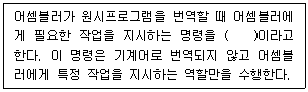
- 의사 코드 명령(pseudo instruction)
- 공유 명령(common instruction)
- 페이지 명령(page instruction)
- 세그먼트 명령(segment instruction)
(정답률: 알수없음)
63. BNF 표기법에서 정의를 나타내는 기호는?
- ＜＞
- { }
- ::=
- |
(정답률: 86%)
64. C 언어에서 키보드로부터 한 문자를 읽어 들여 실행중인 프로그램에 전달해 주는 함수는?
- putchar ( )
- puts ( )
- getchar ( )
- gets ( )
(정답률: 알수없음)
65. 프로그래밍 언어의 설계 원칙으로 거리가 먼 것은?
- 프로그램 작성의 효율성을 위해서 설계 시에는 간결함이 결여되어도 표현력(Expressiveness)이 뛰어나야 한다.
- 프로그래밍 과정은 언어의 신뢰성뿐 아니라 번역기의 신뢰성에도 도움을 주기 때문에 정확(Preciseness)해야 한다.
- 프로그래밍 언어는 특정 기계에 제한되지 않고 독립성(Idependence)을 가져야 한다.
- 프로그램 완성 후 사용자의 요구에 의해 언어의 특징을 더 추가할 수 있도록 프로그램의 확장(Extensible)이 용이해야 한다.
(정답률: 100%)
66. 어셈블리어에 명령 중 다음 설명에 해당하는 것은?
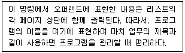
- EJECT
- TITLE
- PAGE
- CREF
(정답률: 알수없음)
67. 어세블리어로 작성된 소스 프로그램을 어셈블러를 이용하여 기계어로 번역하는 것을 무엇이라고 하는가?
- Compile
- passing
- Assemble
- Operation
(정답률: 60%)
68. 기계어에 대한 설명으로 옳지 않은 것은?
- 2진수를 사용하여 데이터를 표현한다.
- 프로그램의 실행 속도가 빠르다.
- 프로그램의 유지보수가 용이하다.
- 호환성이 없고 기계마다 언어가 다르다.
(정답률: 90%)
69. 다음 프로그램의 실행 과정 순서가 옳은 것은?
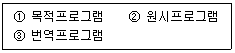
- ① → ③ → ②
- ① → ② → ③
- ② → ① → ③
- ② → ③ → ①
(정답률: 알수없음)
70. 매크로 프로세서의 기본 수행 기능에 해당하지 않는 것은?
- 매크로 정의 인식
- 매크로 호출 저장
- 매크로 정의 저장
- 매크로 호출 확장 및 인수 치환
(정답률: 73%)
71. C 언어에서 나머지를 구하는 연산자는?
- #
- %
- = =
- &
(정답률: 알수없음)
72. 어셈블러를 두 개의 Pass로 구성하는 주된 이유는?
- Pass 1, 2의 어셈블러 프로그램이 작아서 경제적이기 때문에
- 기호를 정의하기 전에 사용할 수 있어 프로그램 작성이 용이하기 때문에
- 한 개의 Pass만을 사용하면 프로그램의 크기가 증가하여 유지보수가 어렵기 때문에
- 한 개의 Pass만을 사용하면 메모리가 많이 소요되기 때문에
(정답률: 알수없음)
73. 어셈블러가 원시 프로그램을 목적 프로그램으로 번역할 때 현재의 오퍼랜드에 있는 값을 다음 명령어의 번지로 할당하는 어셈블리어 명령은?
- EJECT
- INCLUDE
- END
- ORG
(정답률: 알수없음)
74. 고급언어에 대한 설명으로 옳지 않은 것은?
- 이식성(portability)과 생산성을 높일 수 있다.
- 저급언어 보다 디버깅이 어렵다.
- 언어를 배우기가 저급언어에 비하여 상대적으로 쉽다.
- 프로그램의 내부적 표현에 대한 자세한 이해 없이 코딩이 가능하다.
(정답률: 70%)
75. C 언어의 이스퀘이프 시퀀스에서 “＼f”의 의미는?
- newline
- backspace
- tab
- form feed
(정답률: 알수없음)
76. C 언어에서 사용되는 출력문 “printf”에 사용되는 변환문자의 설명 중 옳은 것은?
- %d는 16진 정수를 나타낸다.
- %s는 단일 문자를 나타낸다.
- %e는 지수를 가진 정수를 나타낸다.
- %u는 부호 없는 10진 정수를 나타낸다.
(정답률: 100%)
77. C 언어에서 사용되는 기억클래스의 종류가 아닌 것은?
- Automatic Variables
- Register Variables
- Static Variables
- Internal Variables
(정답률: 알수없음)
78. 프로그램을 번역하는 방식이 나머지 셋과 다른 하나는?
- COBOL
- FORTRAN
- C
- BASIC
(정답률: 91%)
79. C 언어에서 사용하는 자료 형이 아닌 것은?
- double
- char
- integer
- unsiged
(정답률: 알수없음)
80. 구조적 프로그래밍의 기본구조와 거리가 먼 것은?
- 차별구조(Difference Structure)
- 선택구조(Selection Structure)
- 반복구조(Iteration Structure)
- 순차구조(Sequence Structure)
(정답률: 알수없음)